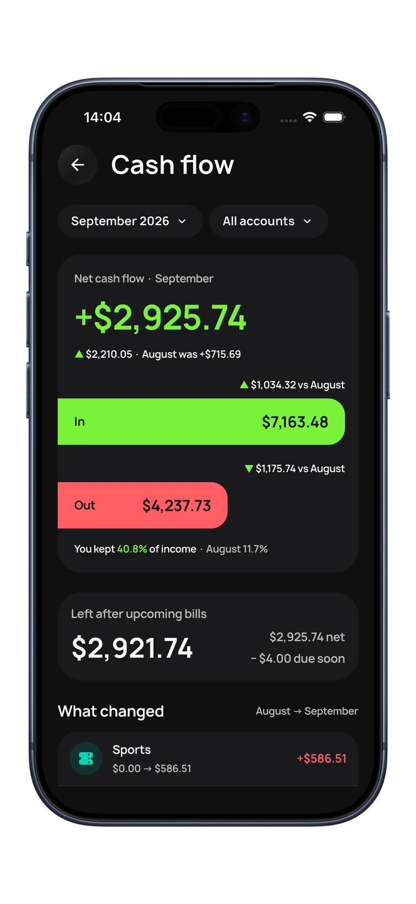

An end-of-month budget review is a short check-in where you compare what you planned to spend with what you actually spent, then adjust next month's plan. Most guides make it sound like an hour with a spreadsheet. It doesn't have to be. If your transactions are already tracked and sorted, a useful monthly budget review takes about five minutes. Here's the checklist, step by step, with a worked example.
Why a monthly budget review is worth five minutes
A budget is a guess made at the start of the month. The review is where you find out how good the guess was. Skip it, and the same categories go over every month without anyone noticing. Do it, and next month's budget gets a little more realistic each time.
A monthly rhythm suits most people because bills, rent and pay usually run on a monthly cycle. Experian suggests reviewing your budget on a regular schedule that works for you, and doing a fuller rework when your income, expenses or goals change (Experian). The five-minute review below is the regular check. Save the big rework for a raise, a move or a new recurring cost.
Before you start: what you need
- Your spending for the month, in one place. If it's scattered across cards, cash and bank apps, start with how to track your spending without a spreadsheet.
- Categories you trust. A review is only as good as the sorting behind it.
- Last month's plan. Your budget total and how it was split across categories. If you don't have a budget, last month's spending works as the comparison.
The 5-minute end-of-month budget review checklist
Step 1: Close out the month (1 minute)
Make sure the month is complete before you judge it. Add any cash spending you didn't log, check that pending card payments have come through, and fix anything sorted into the wrong category. A $120 superstore trip filed under Shopping instead of Groceries can make two categories look wrong at once.
Step 2: Check one number (30 seconds)
Look at the total first: how much did you spend against your budget? Then glance at net cash flow, which is money in minus money out. If you spent under budget but still had negative cash flow, your budget may be set higher than your income can support.
Step 3: Find the categories that drifted (1½ minutes)
For each category, work out the variance:
Don't chase every small gap. A simple rule: only look closely at categories that are more than about 10% or $50 off, whichever matters more to you. Usually that leaves two or three.
Step 4: Ask why (1 minute)
For each category that drifted, decide which of these it was:
- A one-off. A car repair, a wedding gift, a flight. No change needed, but consider saving ahead for it next time.
- A new recurring cost. A subscription or bill that wasn't there before. Decide whether to keep it. Our guide to finding and cancelling forgotten subscriptions helps here.
- A habit. More takeout, more small online orders. This is the one worth acting on.
Your top merchants are the fastest way to tell these apart. One big charge is a one-off. The same merchant twelve times is a habit.
Step 5: Make one change for next month (1 minute)
Pick one adjustment and stop. Most of the time, the best change moves money between categories and keeps your total the same. Your plan then matches how you actually live, without quietly spending more. If you truly can't make the total work for two or three months in a row, that's a signal to rework the whole budget, not just one line.
Worked example: a $3,000 monthly budget review
Say you set a $3,000 budget for October and split it across seven categories (Subs is subscriptions). Here's how the month ended:
| Category | Budget | Actual | Diff |
|---|---|---|---|
| Rent | $1,400 | $1,400 | $0 |
| Groceries | $400 | $352 | −$48 |
| Takeout | $200 | $284 | +$84 |
| Transport | $250 | $231 | −$19 |
| Subs | $80 | $96 | +$16 |
| Shopping | $300 | $340 | +$40 |
| Other | $370 | $310 | −$60 |
| Total | $3,000 | $3,013 | +$13 |
The total was only $13 over, which looks fine. The categories tell a different story:
- Takeout was $84 over, or 42%. The merchant list shows the same delivery app most weeks. That's a habit.
- Subscriptions was $16 over because of a new streaming service. That's a new recurring cost.
- Shopping was $40 over (13%) from a single jacket. That's a one-off.
The one change: raise Takeout to $260 (+$60), and lower Groceries to $360 (−$40) and Other to $350 (−$20). The total stays at $3,000, and the budget now reflects real life instead of a goal you miss every month. Then decide on the new subscription: keep it and accept the extra $16, or cancel it.
That's the whole review. If you use a split like the 50/30/20 rule, check that your changes still fit it.
How to do your end-of-month review in BudgetGo
BudgetGo handles most of steps 1 to 4 for you, so the review really can fit in five minutes:
- Step 1 is mostly done already. Spending comes in from connected banks, Apple Pay and bank SMS automations, imported statements, voice entry and manual entry, and AI categorizes every transaction. You can review and change any category.
- Steps 2 and 3: the home screen shows what's left of your budget for the period, and Analytics shows your spending trend, cash flow, top merchants and forecast.
- Step 4: top merchants show who you keep paying, and detected subscriptions and bills appear under Due this week, so new recurring costs are easy to spot. More on that in how BudgetGo finds your subscriptions and bills.
- Step 5: when a budget period ends, BudgetGo's insight stories include an end-of-period review with a suggestion for the next period, such as “Raise Food delivery to $190 and lower Groceries to $211. Your total stays the same.” The decision is yours.

No budget? Review anyway
BudgetGo works with one active budget at a time, or in tracking-only mode with no budget. If you just track, you can still do steps 1, 2 and 4: close out the month, check your cash flow, and compare this month with last. The budget-only parts, like the end-of-period suggestion, need an active budget. If you're not sure which approach suits you, try tracking for a month first and set a budget once you know your real numbers.
Common budget review mistakes
- Only checking the total. As the example shows, a total that's on target can hide a category that's 40% over.
- Changing everything at once. Five changes rarely stick. One does.
- Treating every miss as a failure. One-off costs happen. The review is about patterns, not perfection.
- Reviewing an unfinished month. Do it once the month is closed and pending payments have cleared.
Doing this in November? It's worth reviewing before December, when holiday spending lands. Our guide on how much to spend on Black Friday can help you set limits early.
Frequently asked questions
How often should you review your budget?
Monthly works for most people, because rent, bills and pay usually follow a monthly cycle. Add a fuller rework when something big changes, like a new job, a move or a new recurring bill.
What should a monthly budget review checklist include?
Five things: make sure every transaction is in and correctly categorized, compare your total to your budget, find the categories with the biggest variance, decide whether each was a one-off, a new cost or a habit, and make one change for next month.
What should I do if I went over budget this month?
Find which categories caused it and why. If it was a one-off, leave the budget alone. If it's a habit, either cut back or move money from a category you underspent so the total stays the same.
Can I do a monthly budget review without a budget?
Yes. Compare this month's spending and cash flow with last month's. Look for categories and merchants that grew, then decide whether that's a change you're happy with.